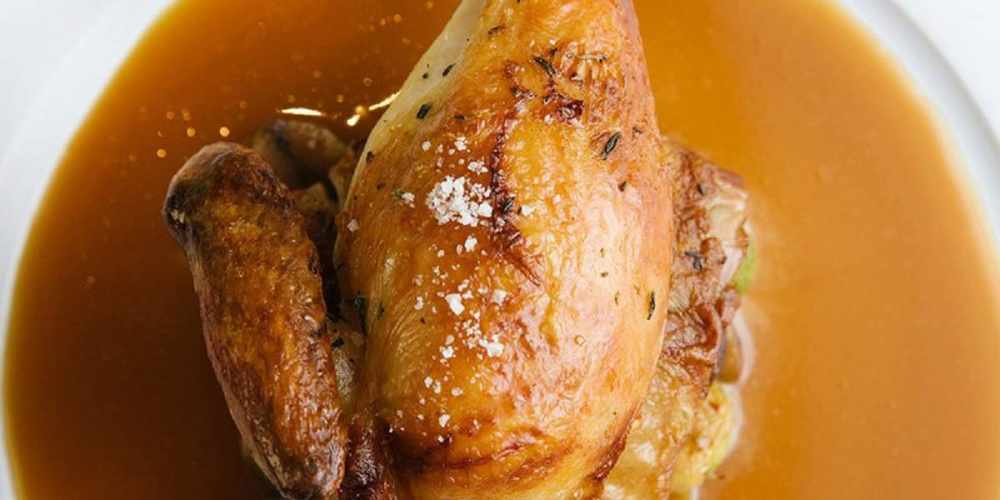

Chicken Jus
Recipe Specification
Ingredients List
| Ingredients | Quantity |
|---|---|
| White Onion | 1x1 |
| Carrot | 1x1 |
| Leek | 1x1 |
| Thyme | 1 sprig |
| Bay leaf | 15g |
| Vegetable Oil | 20ml |
| Chicken Stock | 1 litre |
| Corn flour | 15g |
| Brown Sugar | 10g |
| Unsalted Butter | 25g |
| Salt & Pepper | To Taste |
Yield: 1 litre
Preparation
- Peel and slice onion.
- Peel and slice carrot.
- Wash and slice leek.
- Mix cornflour with 50ml of cold water.
Cooking Instructions
- Place a saucepan on a high heat and add vegetable oil.
- Add onions, carrot, leek, sprig of thyme and bay leaf to pan and occasionally stir. Fry for 8-10 minutes ensuring vegetables get good colour on them as this will give better depth of flavour and colour to the jus.
- Add chicken stock to the pan, bring to the boil before reducing to the simmer. Cook for 20-55 minutes.
- Strain vegetables from chicken stock and return stock to the pan.
- Add sugar and season to taste.
- Whisk cornflour mixture in saucepan so that jus slightly thickens.
- Finally, whisk unsalted butter into jus to give it a sheen.

Serving Suggestions
Chicken Jus goes great with roast chicken and fried chicken.
Storing instructions
Allow jus to cool to room temperature before putting in an air-tight container and placing in the refrigerator. Consume within 4 days of making it
Reheating Instructions
Place in the microwave for 2-3 minutes.